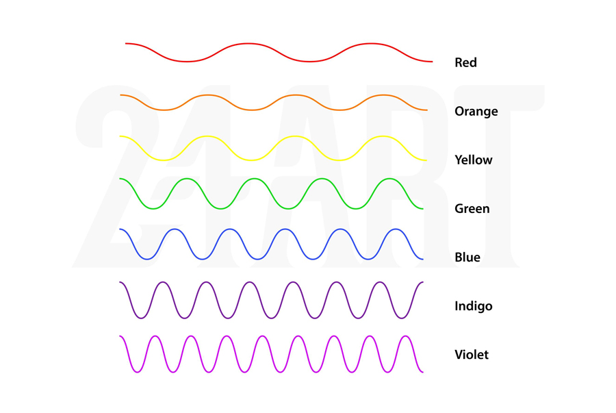
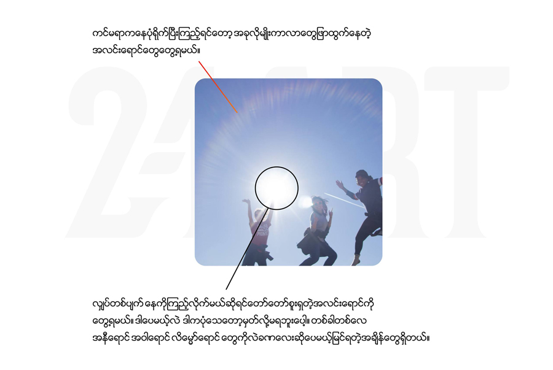

"RGB သဘောတရား" နဲ့ “နေရဲ့အရောင်များ"နေရဲ့အရောင်ကဘာလဲ? 🔴အနီလား 🟡အ၀ါလား?
တစ်ချို့ကလဲ အနီ တစ်ချို့ကလဲအ၀ါ။ ဒါကဘာဖြစ်လို့လဲဆိုတော့ ကျွန်တော်တို့တွေ နေလုံးကြီးကို ကြည့်တဲ့အချိန်နဲ့ပဲဆိုင်မယ်ထင်တယ်။ နေ့ခင်းနေ့လည်အချိန်ဆို နေကိုစိုက်ကြည့်ဖို့ဆိုတာမဖြစ်နိုင်ဘူး။ အလင်းအားအရမ်းပြင်းလွန်းတယ်။
🔴ဥပမာ ပုံဂံမှာနေလုံးကြီသွားကြည့်ကြတယ်ဆိုပါစို့။ ဘယ်အချိန်မှာကြည့်ဖြစ်ကြလဲ? နေ့ခင်း၁၂နာရီမှာကြည့်ကြတာလား ဒါမှမဟုတ် ညနေ ၅နာရီမှာကြည့်ကြတာလား? ရှင်းပါတယ်။ ညနေ ၅နာရီပေါ့။ ဘာလို့ဆို ဒီအချိန်က အရမ်းလဲမပူတော့ဘူး။ နေလုံးကလဲ အနီအ၀ါတွေနဲ့အရမ်းကိုလှနေတဲ့အချိန်။ ဒါကြောင့်လူတွေက နေရဲ့အရောင်ကို အနီ (သို့)အ၀ါလို့ပြော ကြတာ။
🟢တကယ်တော့ သူ့ဆီမှာ အရောင် (၇မျိုး)ရှိပါတယ်။ ဘာအရောင်တွေလဲဆိုတော့ Red, Orange, Yellow, Green, Blue, Indigo, Violet အရောင်တွေဖြစ်ပါတယ်။ မိုးရွာပြီးရင်မြင်ရတဲ့ သက်တန့်ရောင်စဥ် ၇ရောင်ဖြစ်ပါတယ်။
🔵ဒါဆိုဘာလို့ကျွန်တော်တို့တွေ အဲဒီအရောင်တွေကိုတိုက်ရိုက် မမြင်နိုင်ရတာလဲ? ဘာလို့ဆို “နေ”ရဲ့ထုတ်လွှတ်တဲ့အလင်းစွမ်းအင်က အရမ်းပြင်းတဲ့အတွက်ပါ။ နေ့လည်နေ့ခင်း နေကိုတိုက်ရိုက်ကြည့်လိုက်ရင် ကျွန်တော်တို့မျက်လုံးက ကာလာ (၇မျိုး) ကိုတစ်ခါတည်းပေါင်းစပ်ပြီး ကြည့်သလိုဖြစ်သွားတဲ့အတွက်အဖြူရောင်အဖြစ်ပြောင်းသွားတာဖြစ်ပါတယ်။ ဒါကြောင့်နေရဲ့ အရောင်က အဖြူရောင်ဖြစ်ပါတယ်။
RGB (Additive Color) သဘောတရားလိုပဲ 🔴အနီ 🟢အစိမ်း 🔵အ၀ါ သုံးရောင်ကို ပေါင်းစပ်လိုက်ရင် အဖြူရတယ်ဆိုတဲ့သဘောတရားနဲ့တူနေတယ်။ Color ဆိုတာ သဘာ၀တရားနှင့်ဆက်စပ်နေတဲ့ သဘောတရားတစ်ခုပါ။ အရာအားလုံးရဲ့အခြေခံအုတ်မြစ်ဟာ သဘာ၀တရားပါပဲ။